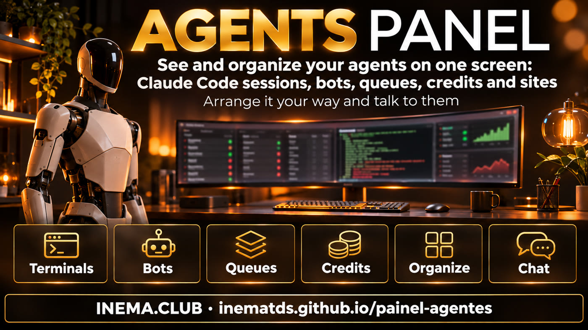

painel-agentes is a page that runs on your computer and shows everything your AI agents are doing on one screen: open Claude Code sessions (and whether you or a bot opened them), bots, publishing queues, subscription limits and whether your sites are online. It is for anyone who leaves several agents working and loses track of where each one is. You can move the panels around as you like and, if you want, talk to a bot or terminal right there. You need Node 20+ and Linux. To just take a look, demo mode does not read any of your data.
What it is
One screen for the agents working for you
If you use agents, you can end up with five terminals open, two bots running overnight and a queue no one has checked. The dashboard brings everything together and shows you what is waiting for you.

👀 See everything at a glance
Nine panels: what is waiting for you, machine, bots, production, publishing, credits, sites, vacancies and terminals. Each one tells you in a sentence whether everything is OK.
🧩 Organise it your way
The Organizar (Arrange) button moves panels around (by tapping or dragging). Three ways to view — Lista (List), Ícones (Icons) and Imagens (Images) — plus a Jarvis version with voice.
💬 Talk to them
Open a session and read the conversation, view the screen live and, if you enable it, type in it. The Conversar (Chat) drawer lets you talk to one of your bots or to a terminal.
Screens
What it looks like in practice
All the images below are from demo mode: made-up data, no one’s real data. This is exactly what you see when you run npm run demo. The dashboard interface and images are in Portuguese; button names appear here as they do on screen.
Classic dashboard — Lista (List)At the top is the alert bar (errors in red, warnings with !). The panels are below. In Terminais (Terminals), 👤 means a session you opened and 🤖 means one opened by a bot.Imagens (Images) modeProduction, publishing and terminals become image cards. Good for a TV in the corner of a room.Publicação (Publishing): queues item by itemEach item has just one status, whatever the format of your queue.Session — Dados (Data) tabWho opened it, how it started, model, how much of the context it has used, equivalent cost and the last request.Session — Conteúdo (Content) tabThe conversation, read-only, refreshed every 5 seconds. Any keys and passwords that appear are masked.Session — Terminal tabThe live screen. You can type in it (Assumir (Take control)) only with PAINEL_ASSUMIR=1 and in sessions opened in the dashboard’s tmux.Organizar (Arrange)The panels have dashed borders: tap one, then tap where you want it to go, or drag it. Click Pronto (Done). The layout is saved on this device.Conversar (Chat) drawerChoose a bot or terminal and type. You have Esc, Ctrl+C, arrow and Enter buttons, plus + Novo terminal (+ New terminal).Versão Jarvis (Jarvis version) (/jarvis)The same data in a HUD style (a dashboard like one from a science fiction film): animated core, one sentence per system, "Bom dia" (Good morning) spoken aloud and keyboard shortcuts (1 Bom dia · 2 Status · 3 What’s waiting · 4 Focus mode · 5 Change view).
Works on your phone too
The panels stack and the buttons wrap onto new lines. To access it away from home, use a local network or VPN (a private network between your devices), with a password (see Security).
Queue statuses, the same in every view:
! na fila (queued)✓ publicando (publishing)✓ feito (done)× erro (error)retirado (removed)
How it works
It only reads what is already on your machine
The dashboard does not call an AI model or API. It reads files your agents and Claude Code already save and brings everything together. Anything you have not configured appears as "not configured" — never as an error.
Your agents work→save sessions, queues and runs→the dashboard reads every 15 seconds→rules flag what needs attention→you check, arrange and act
Where the data comes from
Sessions: ~/.claude/sessions and ~/.claude/projects
Machine: /proc, disk, journalctl
Bots: systemctl --user and SQLite databases (data stored in a file), read-only
What you set in the config
Queue files (JSON or TXT)
Send and run history (JSONL: a log file with one event per line)
Sites to check, vacancies and deadline reminders
Two views, same data
/painel: classic, with Lista (List), Ícones (Icons) and Imagens (Images)
/jarvis: HUD with voice and shortcuts
When voice is on, it speaks only new alerts
Requirements
What you need
A computer or VPS running Linux (machine data comes from /proc) and Node installed.
Node 20 or later
Tested on Node 22.
node -v # v20 or maior
Git
To download the project.
git --version
tmux (optional)
Only if you want to see the live screen, take control or open a new terminal.
tmux -V
User guide · step by step
From scratch to a running dashboard
Start with demo mode to get to know the screen. Then point it to your files.
1
Download and install
Clone the repository, install the dependencies and build it.
git clonehttps://github.com/inematds/painel-agentescd painel-agentes
npm ci && npm run build
If you see a better-sqlite3 build error, you can carry on: it is optional. The dashboard works the same without it; only the Bots panel stops reading databases and shows services only.
2
Take a look in demo mode
Made-up data in all nine panels, no login and no access to your data. Open http://127.0.0.1:3143/painel and then /jarvis.
npm run demo# same as PAINEL_DEMO=1 node dist/index.js
Try the buttons: Lista (List), Ícones (Icons), Imagens (Images), Organizar (Arrange) (move two panels around), Conversar (Chat) and click a session in Terminais (Terminals). Stop with Ctrl+C.
3
Create your config
Copy the example and delete what you do not use. Every key is optional: without a key, the panel shows "not configured".
cp painel.config.exemplo.json painel.config.json
nano painel.config.json # point to the paths for your queues, bots and sites
The example includes made-up bots, queues and sites (bot-tarefas, exemplo.com): delete those entries or replace them with your own, or the panels will show "no data" or false alerts. The Credits panel only shows Claude limits if your statusline (the Claude Code status line) writes the file specified in creditos.limites_claude.
Claude Code sessions appear without any setup: the dashboard already looks in ~/.claude. The full list of keys is in the README.
4
Set a password
Only a password summary (hash) is saved. The password must be at least 12 characters long. With --gerar, the dashboard creates a strong password and saves it to the file ~/.config/painel-agentes/senha-inicial.txt (the terminal shows the path): read it, keep it somewhere safe and delete that file.
npm run senha# you type the passwordnpm run senha -- --gerar # or it generates one for you
5
Start the dashboard
Open http://127.0.0.1:3143/painel — only on this computer.
npm start
To keep it running, create a user systemd service:
systemctl --user daemon-reloadsystemctl --user enable --now painel-agentes
systemctl --user status painel-agentes # is it running?journalctl --user -u painel-agentes -n 30 # if it did not start, the error appears hereloginctl enable-linger# on a VPS: it keeps running after you log out
Adjust the two service lines for your setup: WorkingDirectory is the folder where you cloned the project (e.g. %h/projetos/painel-agentes; %h means your home folder) and ExecStart uses the path shown by which node (with nvm, it differs from /usr/bin/node).
6
Arrange it your way
Click Organizar (Arrange), tap a panel and then where you want it to go (or drag it), then click Pronto (Done). The layout is saved in the browser on that device; Restaurar padrão (Restore default) returns it to the original. Click any panel to see all its details.
7
(Optional) Take control and chat
These are off by default. Enable them only on a trusted network — read Security first.
They use two different keys. PAINEL_ASSUMIR=1 enables typing in terminals (the Terminal tab, a terminal in the Conversar (Chat) drawer and + Novo terminal (+ New terminal)). PAINEL_CHAT=1 enables chat with your bot only, and only if chat.bot.url is set in the config. To enable both, put them on the same line:
PAINEL_ASSUMIR=1 PAINEL_CHAT=1 npm start
The dashboard can only view and type in sessions opened in the dashboard’s tmux: a separate tmux named painel. A Claude session opened outside it appears in the list, but you cannot take control of it. To open an agent inside it:
tmux -L painel new -s meu-projeto claude
+ Novo terminal (+ New terminal) does this for you, always inside the folder set in novo_terminal.raiz.
Security
Locked by default
The dashboard shows a lot about your machine. That is why it starts locked, and you open only what you need.
🔒 Only on this computer
It runs on 127.0.0.1. To make it available on your network ("bind": "0.0.0.0"), a password is required: without one, it refuses and stays on this computer.
🔑 Password login
Your login is stored securely in the browser, a device is remembered for 365 days, 5 consecutive errors lock you out for 15 minutes, and there is a "Sair de todos os aparelhos (Log out of all devices)" button.
👁️ Read-only
It does not call a model or API; it opens databases only to read them; keys, tokens and passwords in conversations and terminals are masked.
🧪 Isolated demo
In demo mode, it does not read files, run commands or access the network. It only responds on this computer and refuses any write action.
⚠️ Risk of taking control, opening a new terminal and chatting
These three actions type into the agent. If Claude there runs without asking for permission, anyone who gets into the dashboard controls your machine. That is why they are off by default. If you enable them, use only on a local network or VPN, never exposed directly to the internet. Each message is recorded in a log (only the start of the text, masked); the log for taking control is assumir.log, in the dashboard’s data folder.
Versions
Full or simple?
There is a simple version, in Python and in a single file, for anyone who just wants to look without installing Node.
painel-agentes (this one)
jarvis-painel (simple version)
Needs
Node 20+ and Linux
Python 3 and a browser
What it shows
9 panels: Claude Code sessions, bots, production, item-by-item queues, credits, sites, vacancies, machine and what is waiting for you
timers, queues, logs and your pending tasks, in a HUD style with voice